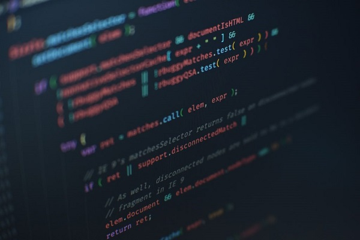

Ben Bahadır Bağcı 1999 yılında Mersin'de doğdum. İlk ve orta öğrenimimi Mersin'de tamamladım. Lisans eğitimimi Sivas Cumhuriyet Üniversitesi'nde almış bulunmaktayım. Mersin'de ikamet etmekteyim.
Bahsettiğim üzere Lisans eğitimimi Sivas Cumhuriyet Üniversitesinde aldım. İlk stajımı Mezitli Belediyesinde 19 Ağustos 2022 - 16 Eylül 2022 tarihleri arasında (20) gün yaptım. Buradaki stajımı hem yazılım hem de donanım olarak yaptım. Sonraki stajımı Mersin Technoscope bünyesinde bulunan BioCoder Teknolojide 27 Mart 2023 - 03 Mayıs 2023 tarihleri arasından (25) gün yaptım ve burada daha çok yazılım üzerine yoğunlaşıp kendimi geliştirdim.

| Yeteneklerim | |
|---|---|
| Dil | Seviye |
| HTML | Yüksek |
| CSS | Yüksek |
| JavaScript | Orta |
| Java | Yüksek |
| Python | Orta |
| Deep Learning | Başlangıç |
Eğitimim süresince çeşitli programlama dillerinde ve veri yapılarında derslerden başarılı olup; Java, HTML, CSS, JavaScript, Python dilleri üzerinde yoğunlaştım ve siber güvenliğe de bir o kadar meraklıyım.
Akan bir video üzerinden araç sayım, sınıflandırma, yön, hız, renk belirleme uygulaması üzerinde çalıştım. Diğer çalışmalarımın bazılarına GitHub üzerinden ulaşabilirsiniz.